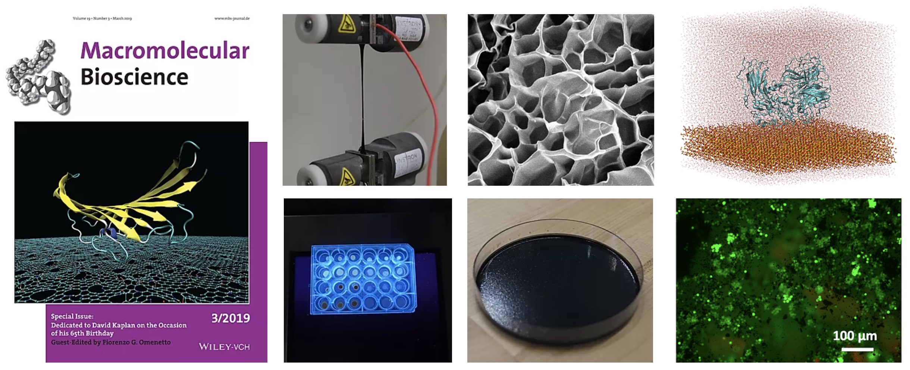
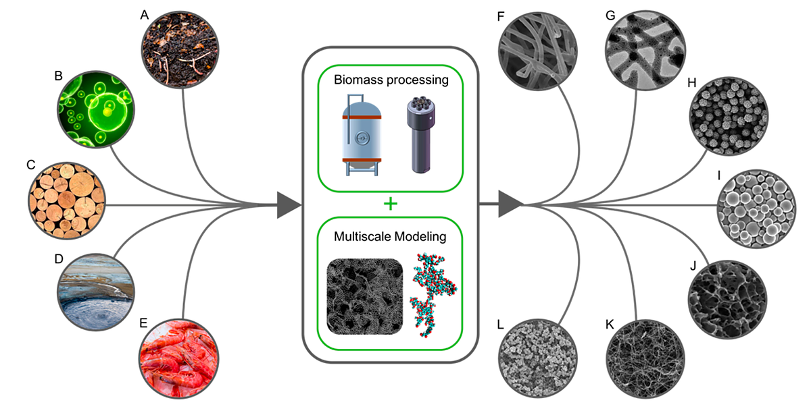
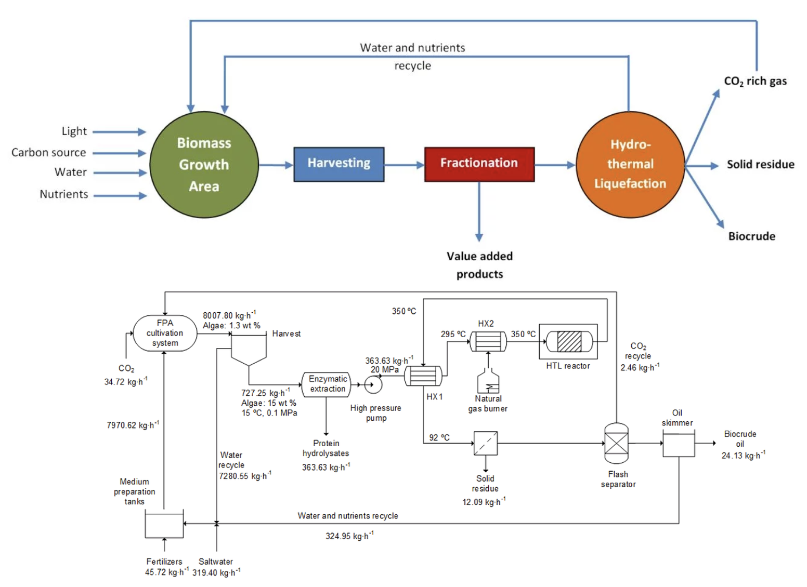
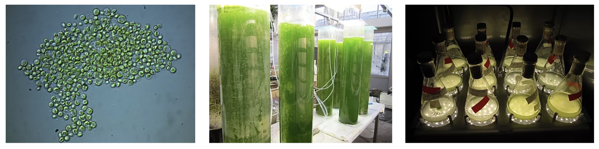
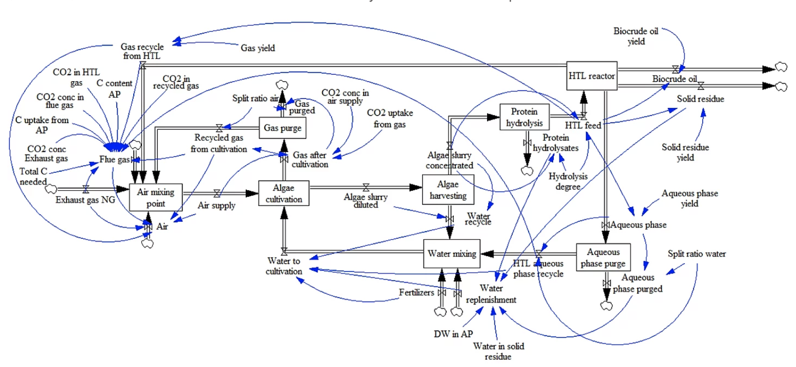

Biopolymeric smart materials
Engineers have paid a lot of attention to structural biopolymers, including silk, elastin, or chitin, as sources of nanostructured and multifunctional materials with applications such as drug delivery or tissue regeneration. This is due to their natural abundance, sustainability, easy processability, cytocompatibility, tuneable degradation, bioresorbability, and controllable mechanical properties.
I am deeply interested in developing biopolymers obtained from natural sources (e.g., silkworm cocoons or chitin) or in bioreactors (e.g., recombinant proteins, bioplastics, alginates) in the form of nanoparticles, fibres, thin films, hydrogels or aligned scaffolds for applications including (i) conformable bioelectronics, (ii) light-responsive hydrogels for 4D actuators or on demand release of bioactive compounds, (iii) multi-layered silk-BC membranes for water purification, or (iv)biocompatible or biomineralized scaffolds to control the fate of stem cells.
My research on this area combines experimental work with molecular dynamics simulations (MD) to reveal the structure-property relationships of biomaterials. MD simulations can be used to understand at the atomistic scale some of the macroscopic properties of these materials. Some examples of this experimental-computational work include the fabrication of silk-based and silk-elastin-based composites with enhanced mechanical properties, electrical conductivity or responsiveness to external stimuli, to name a few. We have also seen that the osteogenic potential of silk-silica chimeras can be greatly affected by the size of silica nanoparticles. I also focus on the development of accurate inorganic-biological interfaces for MD representations, using minerals like silica, hydroxyapatite or brushite.

López Barreiro, D., Martin-Modes, Z., Yeo, J., Shen, S., Hawker, M.J.., Martin-Martinez, F.J., Kaplan, D.L., Buehler, M.J., Adv Mater, 31:1904720, 2019
López Barreiro, D., Yeo, J., Tarakanova, A., Martin-Martinez, F.J., Buehler, M.J., Macromol Biosci, 1800253, 2019
Here you can find a video in which I explain my research in this area, describing how multiscale modelling can be used for the bottom-up design of biopolymers to enhance their mechanical or stimuli-responsive properties, among others. The video got awarded third prize in the NIH Interagency Modeling and Analysis Group Video Competition 2019.
Biobased carbon materials
Hydrothermal processing (HTP) is an aqueous one-pot thermochemical process with a complex reactivity that turns biomass into biobased carbon materials in diverse states (solid, liquid) and/or sizes (from nanoparticles to macroscopic carbons). These materials have been typically used as energy carriers (biochar or biocrude oil). However, my research focuses on an innovative approach that studies the application of such biobased carbons in the field of materials. Biobased carbons are similar in Nature to other carbon nanomaterials, such as graphene or carbon nanotubes. However, their biomass origin dopes them with polar functionalities (mainly with nitrogen and oxygen) that facilitate their integration with biopolymers to create advanced functional materials. This avoids the typical mixing issues between polar biopolymers and the mainly hydrophobic traditional carbon nanomaterials. These polar functionalities also improve the wetting of the biobased carbons, making biobased carbons efective electrocatalysts with increase contact of active species in batteries, supercapacitors or enzymatic/microbial fuel cells; or even for the removal of micropollutants in wastewater.
The properties of biobased carbons obtained via HTP depend on the conditions applied (especially temperature and reaction time) and the feedstock used (the reactivity of lipids, carbohydrates or proteins is very different under hydrothermal conditions). I aim at unlocking these feedstock-processing-property relationships for biobased carbons, in order to maximise their performance in application like energy storage, advanced biopolymeric composites or membranes for water filtration. I am particularly interested in the application of HTP to regionally available feedstocks, in order to facilitate the adaptation of this technology to various countries and ecosystems.
This video shows how we combine HTP experimentation with multiscale modelling for the manufacture of biobased additives that extend the service life of asphalt.
Martin-Martinez, F.J., Jin, K., López Barreiro, D., Buehler, M.J., ACS Nano, 12:7425-7433, 2018
This video shows how we combine HTP experimentation with multiscale modelling for the manufacture of biobased additives that extend the service life of asphalt.
Microalgae biorefineries
This was main main research topic during my PhD. Microalgae are versatile biological cell factories with higher photosynthetic efficiency, faster growth rate and area-specific yield than terrestrial biomass. Hydrothermal liquefaction (HTL) is a microalgae conversion technique in hot compressed water (300-375ºC and 10-25 MPa) that requires no drying and no organic solvents, compared to conventional solvent extraction methods. The main product is a liquid energy carrier called biocrude oil, but also gas, aqueous and solid products.
The main goal of this work was to find the most suitable feedstock strains and the optimal process conditions for microalgae HTL. To that end, I focused not only the conversion to biofuel, but also the extraction of other co-products (e.g., protein hydrolysates). Moreover, I tried to combine the extraordinary capability of microalgae to thrive in contaminated water with the recycle of waste streams in algae biorefineries. The objective was to maximise the recovery or carbon and other nutrientes within a biorefinery, to optimise the use of resources.
 
López Barreiro, D., Bauer, M., Hornung, U., Posten, C., Kruse, A., Prins, W., Algal Res, 9:99-106, 2015
López Barreiro, D., Beck, M., Hornung, U., Ronsse, F., Kruse, A., Prins, W., Algal Res, 11:234-214, 2015
López Barreiro, D., Samorì, C., Terranella, G., Hornung, U., Kruse, A., Prins, W., Bioresource Technol, 174:256-265, 2014
López Barreiro, D., Prins, W., Ronsse, F., Brilman, W., Biomass Bioenerg, 53:113-127, 2013
System dynamics for modelling complex systems
I started working on research as a teaching and research assistant at the Department of Chemical engineering at the University of Santiago de Compostela. My work dealt with the use of System Dynamics for the modelling of complex systems with feedback loops. System Dynamics was designed to understand complex models and to assess the relations between the structure of a system and its behaviour over time. The technique formulates a system in terms of ordinary differential equations (ODEs), representing it graphically by simple blocks of stocks and flows that form feedback loops. The development of user-friendly software has popularised these modeling techniques in numerous fields of research. I have applied it to model the dispersion of a pollutant (lindane) in soils and in techno-economic analyses of industrial processes.
Chaves Padín, R., López Barreiro, D., Macías Vázquez, F., Casares Long, J. J., Monterroso Martínez, C.,, Chemosphere, 90:2428-2434; 2013